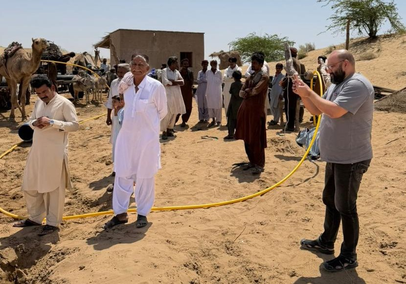
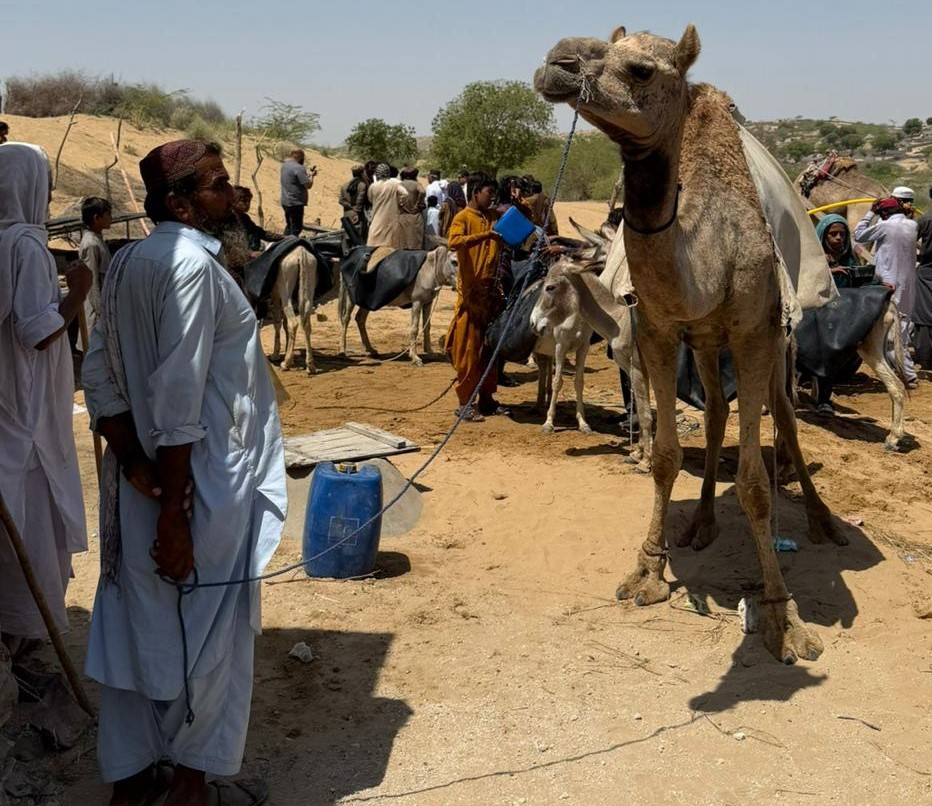
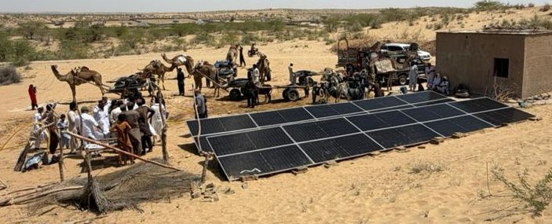
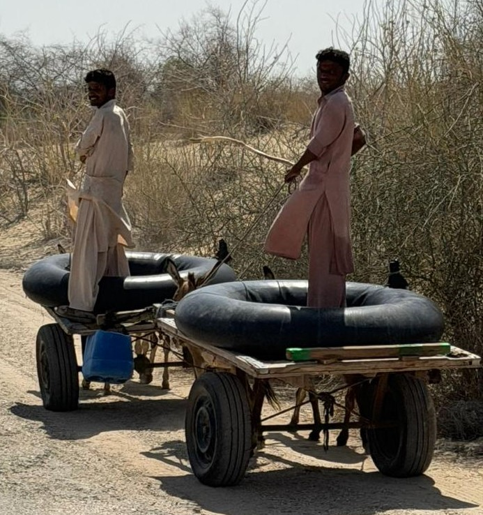
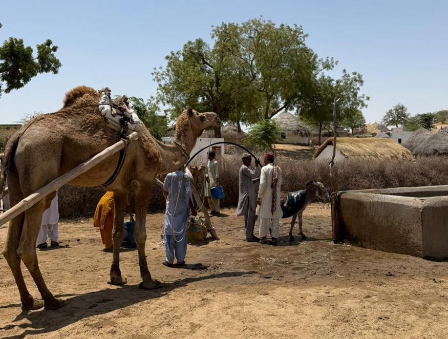
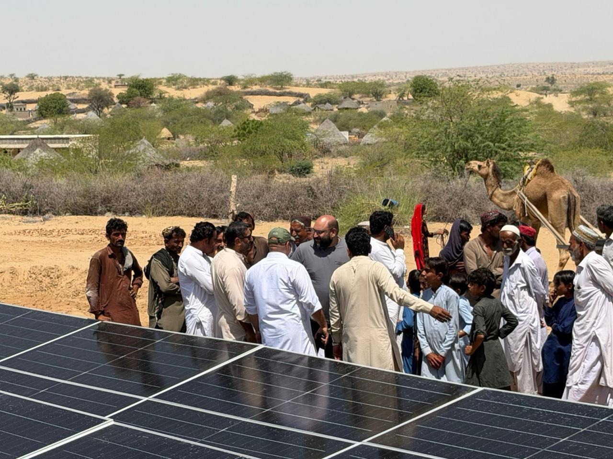
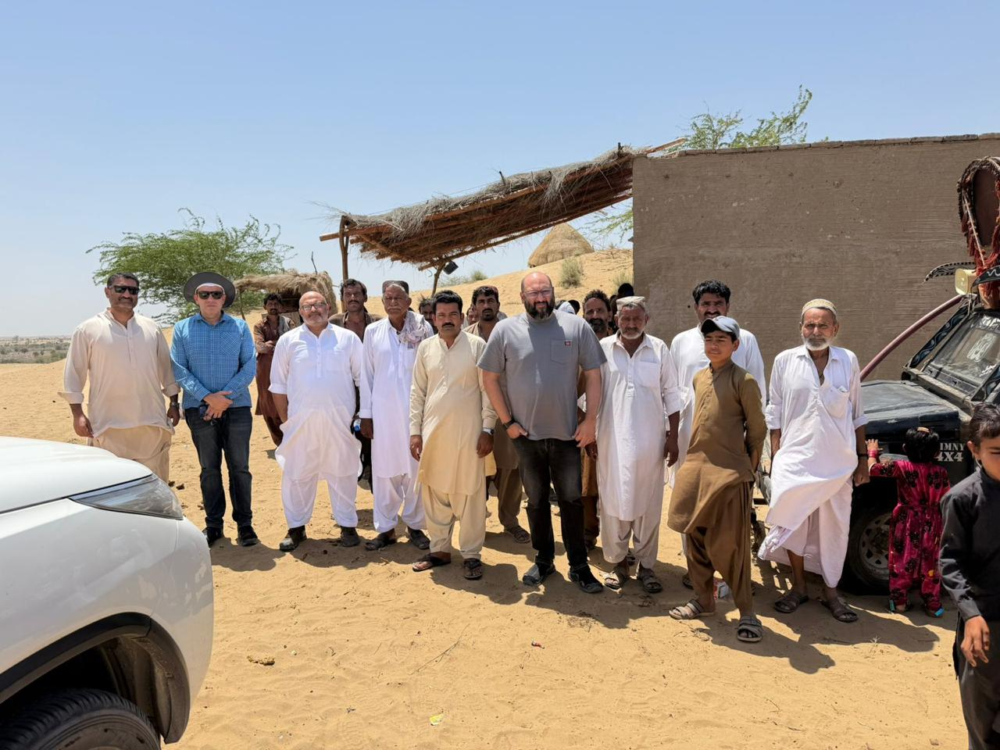
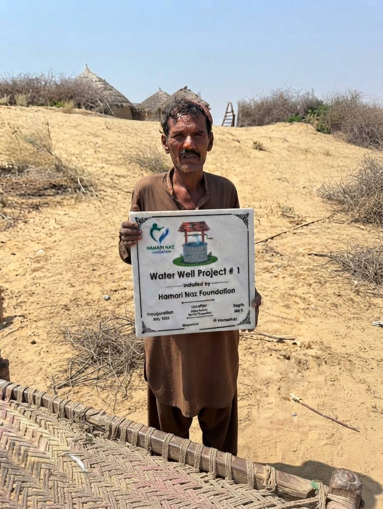
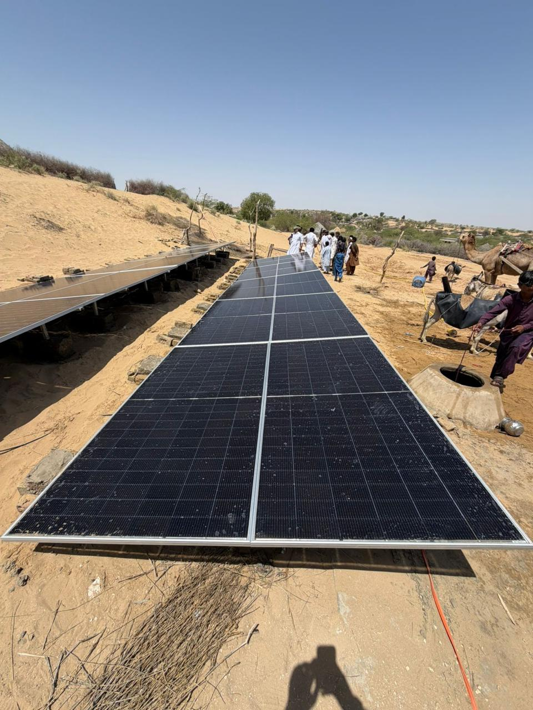
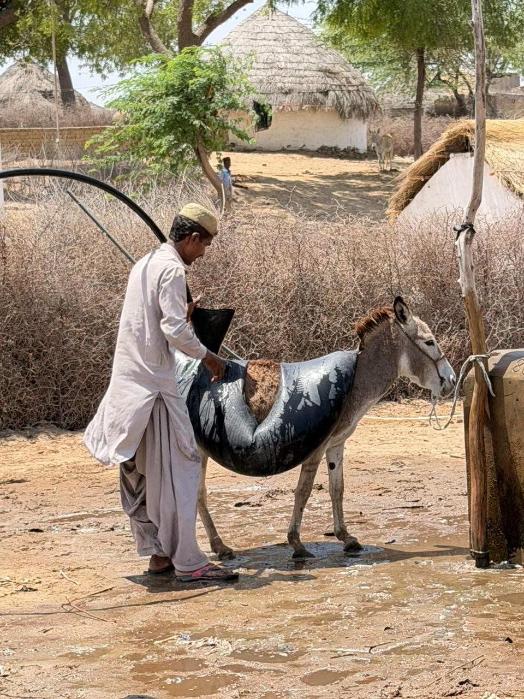

Contact Us
Email: hamarinazfoundation@gmail.com
Phone: +92 300 4010580
Address: Islamabad, Pakistan
Social Media:
 @HamariNaz
@HamariNaz
Providing sustainable access to clean water in Tharparkar, Sindh.
Hamari Naz Foundation successfully completed its inaugural charitable project through the installation of a solar-powered water well in Basti Anwer Nohri, Village Rohar Kelan, Tehsil Dahli, District Tharparkar, Sindh. The project was developed to address the lack of reliable local access to clean water and now benefits approximately 400 households and an estimated 1,500–2,000 individuals.
The well was drilled to approximately 600 feet and powered entirely through solar energy, providing a sustainable long-term solution for a community where residents previously travelled several kilometres to obtain water.


The project originated from a personal connection to the community. A trusted member of our extended family shared the daily challenges faced by residents of Basti Anwer Nohri, where families often travelled more than five kilometres to access water.
For Hamari Naz Foundation, this was not simply a statistic. It highlighted a genuine need that directly affected women, children and elderly residents. The Foundation therefore committed itself to investigating and addressing the problem through a sustainable infrastructure solution.


Before committing funds, the Foundation undertook a structured due diligence process. This included direct community engagement, site assessments, feasibility studies and consultations regarding the most appropriate technical solution.
Expert guidance received during the planning phase helped ensure that the selected solution would provide reliable long-term impact while remaining practical for local conditions.


Hamari Naz Foundation believes in ground-level accountability. Before approving the project, Foundation representatives completed a round trip of more than 3,000 kilometres to visit Basti Anwer Nohri in person.
The visit allowed the team to speak directly with community members, evaluate local conditions and verify the need firsthand. This approach ensured that decisions were based on direct observation rather than assumptions.


A simple idea, careful planning, and a commitment to reaching the community turned into a sustainable source of clean water.
The project began with community discussions and the identification of the urgent water-access challenges faced by families in Basti Anwer Nohri.
Due diligence was completed, local conditions were assessed and the most suitable technical solution was selected.
Funding was mobilised, procurement began and preparations for construction and installation got underway.
Construction and installation works began, bringing the planned water infrastructure closer to completion.
The solar-powered well was completed and became operational, providing reliable access to clean water for the community.
The completed well now provides clean, accessible water on a daily basis for hundreds of families. Easier access to water reduces the burden of long-distance collection and helps improve overall quality of life.
Beyond water access itself, the project supports community wellbeing, productivity and greater day-to-day convenience for residents throughout the area.


Hamari Naz Foundation extends sincere gratitude to all donors, supporters and advisors whose contributions helped make Project HNF-P001 possible. Their trust and support enabled the Foundation to deliver its first completed community infrastructure project and establish a strong foundation for future initiatives.
Back to ProjectsEmail: hamarinazfoundation@gmail.com
Phone: +92 300 4010580
Address: Islamabad, Pakistan
Social Media:
 @HamariNaz
@HamariNaz